第5回定期演奏会（2026.2.8）にたくさんのご来場ありがとうございました！ 過去公演の録画はYouTubeで公開中 →
Members
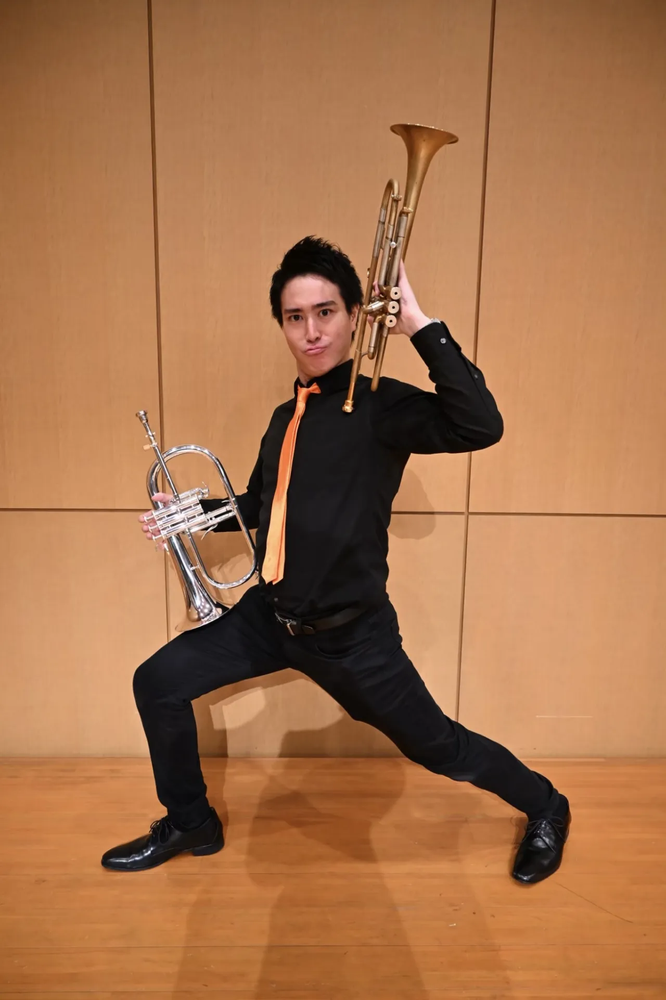
木村 翔
Sho Kimura
福岡市出⾝、中学のジャズバンド部でトランペットを始める。修猷館⾼校卒業後、九州⼤学へ進学、（⼼の）専攻は常にトランペット。現在は3⼈の⼦供と家に眠る複数のトランペットの⽗に勤しむ傍ら、⼩児科医をしている。日本小児科学会小児科専門医。なお、トロンボーンの⽊村とは苗字と⽣年⽉⽇が同じという奇跡的な関係で、⽣き別れた双⼦の可能性がある。クラシックトランペットを河原史弥、ジャズトランペットを加茂弘之の各⽒に師事。吹奏楽団やJazz Big Band でも精力的に活動している。
高倉 渉
Wataru Takakura
幼少期をドミール千⽥（熊本市）で過ごした⾼倉少年は、福岡市へ越してきた。最初は全然上達しなかったトランペットだが、ひょんなことから覚醒した彼はこう思った。「もしかして、トランペットを吹くために産まれてきたのかもしれない。」と。無名校野良育ちの彼だがその楽器の腕前はピカイチだ。しかし緊張に弱いので⽣温かい⽬で⾒守っていてほしい。高文連第32回福岡県高等学校音楽コンクール 金管楽器部門（ソロコンテスト）グランプリ受賞。第37回全九州高等学校音楽コンクール（ソロ）九州大会金賞受賞。座右の銘は「コスパが良い」。安くて美味い居酒屋情報随時募集中。
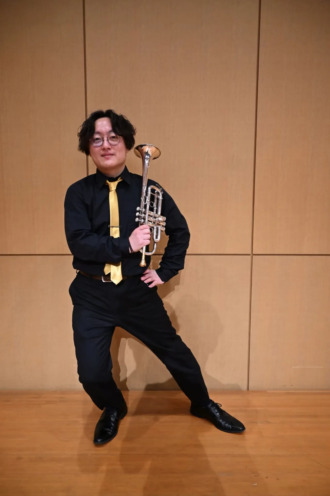
松延 郁弥
Fumiya Matsunobu
福岡県飯塚市（旧庄内町）に生まれ、小学生の頃からラグビーを始める。中学では卓球部に入るが、高校にてラグビーを再開。小学生時代からのポジションであるスクラムハーフを3年間務め、3年次には試合中のチームのまとめ役として活躍する。西南学院大学国際文化学部を卒業後、キャラクターグッズ販売の会社に就職。2019年に結婚し、現在は二児の父親。結婚式ではトランペット奏者である弟にT-BOLANの「離したくはない」を演奏してもらうという夢を叶えるも、Aメロで号泣してしまいほとんど演奏を聴けなかった。という兄を持つ。右利き。
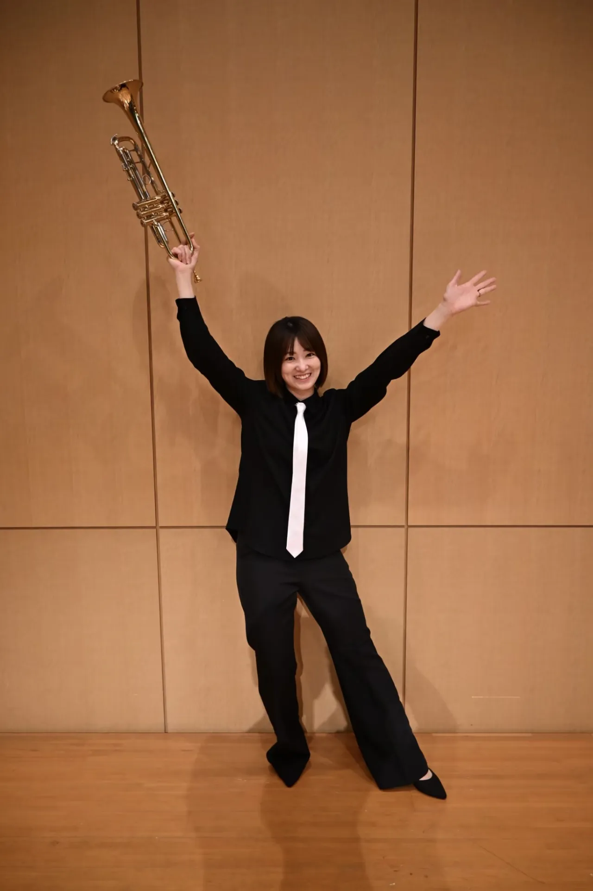
森山 あゆみ
Ayumi Moriyama
⼤分県別府市出⾝。4⼈兄妹の3番⽬・⻑⼥として⽣まれる。6歳の頃、兄2⼈と共に地元の⼩学⽣バンドに⼊り、コルネットを始める。当時⼀番の得意技は、なんと吹きマネだった！⾼校は普⾨館に憧れて精華⼥⼦⾼等学校に⼊学。苦⼿なマーチングで、「笑コラ」に追っかけられ、⿊歴史。現在は髭の⽣えた夫と、息⼦"てっちゃん"の⺟として暮らしている。
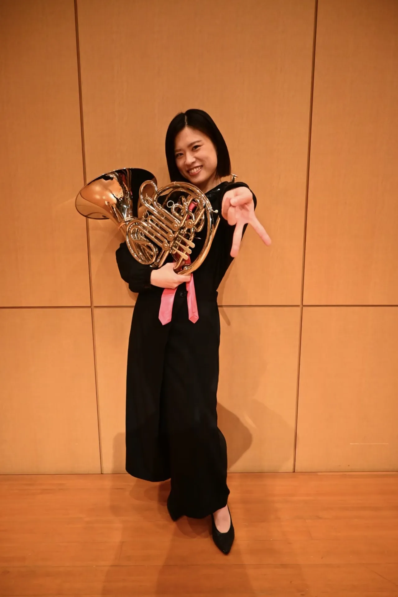
瀬戸山 奈那
Nana Setoyama
福岡市出⾝。仲の良い友達と⼀緒に中学校の吹奏楽部に⼊部。顧問からホルンを勧められるが、たらこ唇になることを恐れていた。普⾨館で演奏することに憧れ、精華⼥⼦⾼等学校に⼊学。まさかの部⻑に抜擢され、怒涛の⽇々を送る。現在は、保育⼠として、少年のような夫、ゆるキャラな息⼦、⽢えん坊な⿊猫、やんちゃなシャム猫と楽しい⽇々を過ごしている。
西原 真由子
Mayuko Nishihara
福岡市出身。中学校で吹奏楽部に入部し、ホルンを始める。最初はホルンかぁ…と思っていたが、次第にホルンの魅力にハマる。高校でも吹奏楽部でホルンを担当し、大学では九大フィルハーモニーオーケストラでオーケストラでのホルンの楽しさを知る。大学卒業後は公務員に就職し、休日は主にオーケストラで活動。現在はかわいい子供に癒されながら、夫と3人で楽しく暮らしている。ウィーンフィルのホルンが大好きで、いつかウィーンフィルの演奏を聴きに行けたらいいなぁと思っている。
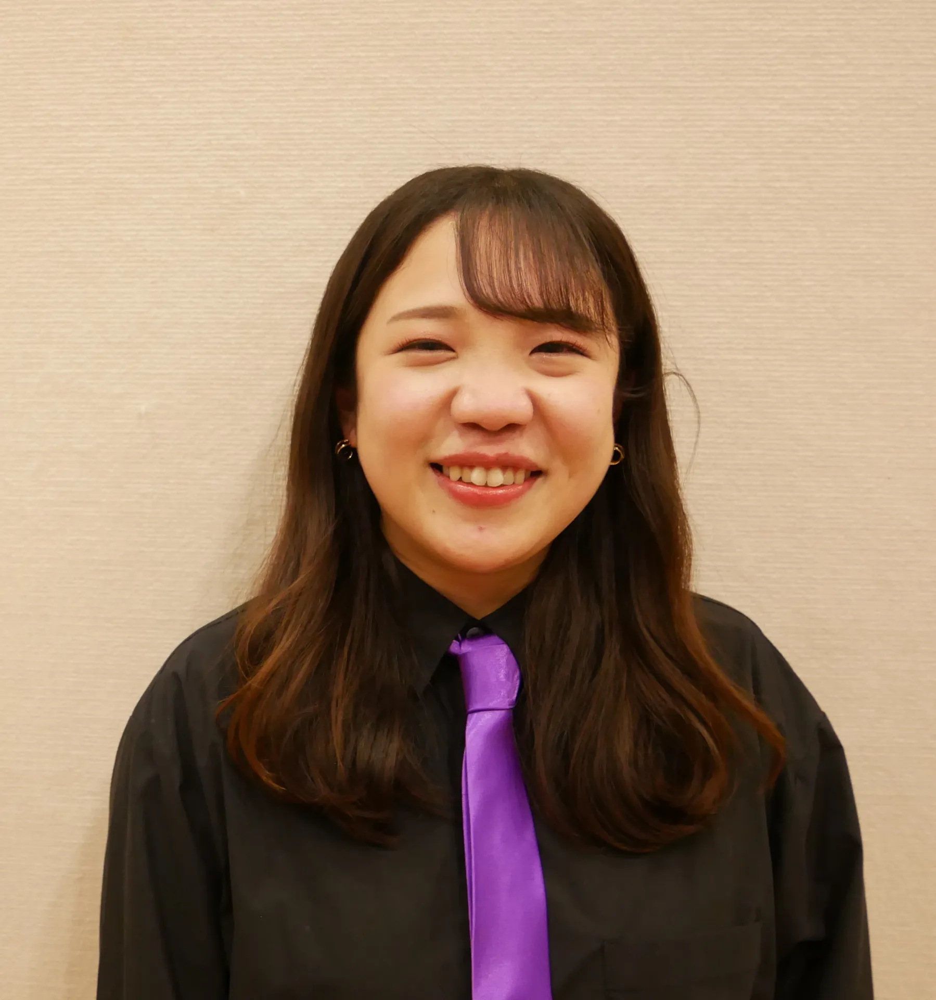
木村 知葉乃
Chiyono Kimura
ホークスの応援団に憧れ、トランペットを吹くために⻑尾中学校吹奏楽部に⼊部するも、当時の⻤顧問に半強制的にトロンボーンに変えられ絶望。しかしいつのまにかトロンボーンにハマる。精華⼥⼦⾼等学校に⼊学し、疲れと反抗期で⽇々暴れる。その後⼤阪⾳楽⼤学に特待⽣として⼊学。第4回⼭⼝トロンボーンコンペティション成⼈部⾨第1位。第19回ブルクハルト国際⾳楽コンクール審査員賞。ブラミニール・スローカー⽒の公開マスタークラスを受講。これまでにトロンボーンを⽊村哲雄、呉信⼀の各⽒に師事。福岡市消防⾳楽隊に5年間在籍。現在はフリーランスとして指導や演奏活動を⾏っている。STEPWindSymphony正団員。
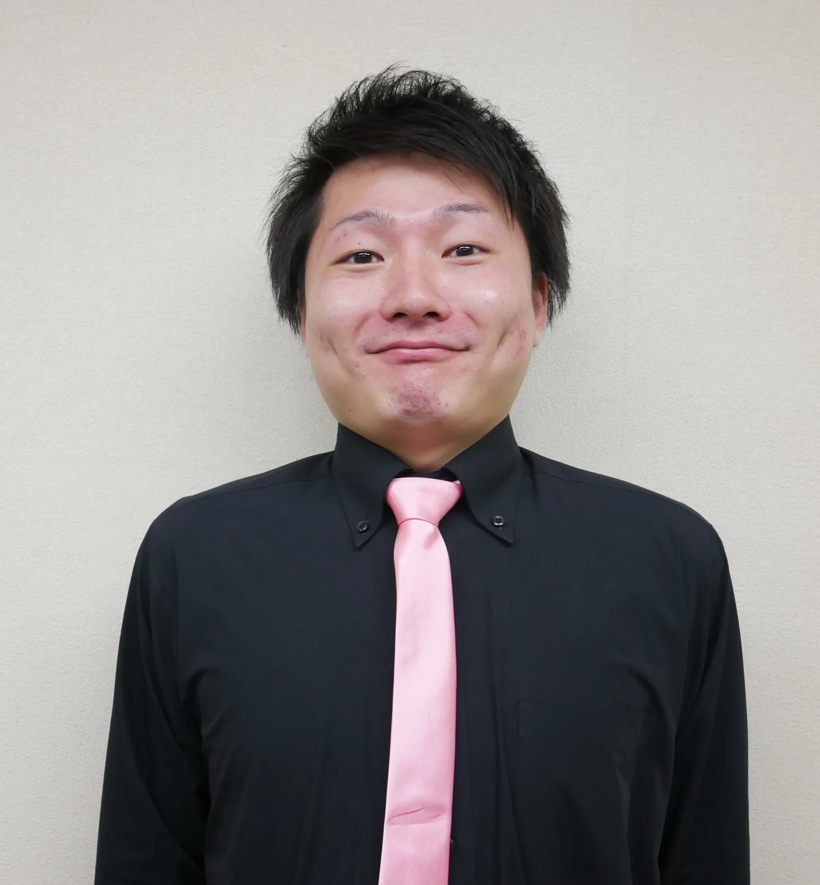
黒田 晃平
Kohei Kuroda
佐賀県伊万⾥市出⾝。⾼校時代、野⽣のトロンボーンに襲われたことをきっかけに楽器を始める。進学先である⻑崎⼤学での吹奏楽部の活動を通じ、メンバーと出会う。4年半の在学期間で取得した単位数は脅威の14単位。地元市役所へ就職したが、チューバの伊藤のことが忘れられず⻑崎県の教育事務へ転職。配属された離島(対⾺)で勤務校の吹奏楽部とアツい3年間を過ごしたものの、楽器の吹き⽅を忘れてしまい現在スランプ。ある意味⼈⽣で⼀番アツい時を過ごしている。
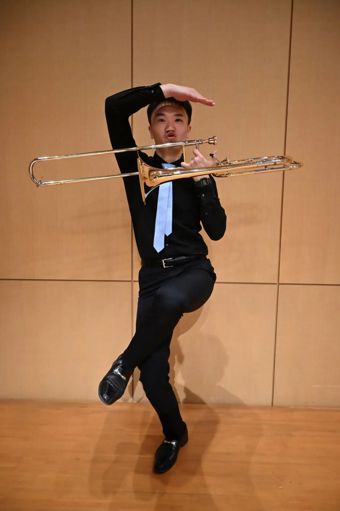
山下 泰輝
Taiki Yamashita
福岡市出身、9歳の時、当時好きだった女の子に誘われ安易に吹奏楽部に入る。強制的にトロンボーンになるも先輩が怖過ぎて楽器の手入れ方法が聞けず、スライドにチューニンググリスを塗り、スライドがスライドしなくなってブチギレられる。など厳しい世界に地獄を見た。しかしトロンボーンがある程度吹けるようになった頃、実は祖父がトロンボーン吹きだったことを知り、自分もトロンボーンを頑張ることを心に決め今日に至る。納豆は挽き割り派、好きなビールはサッポロ黒ラベル。最近の悩みは手足がキンキンに冷えること。
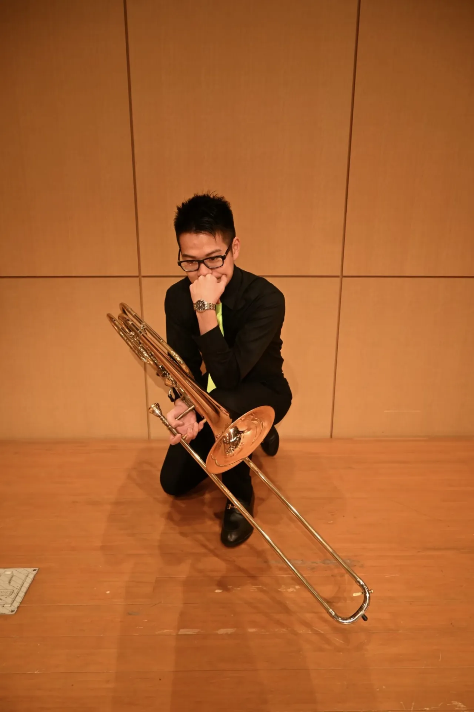
西嶋 武頼
Takeyori Nishijima
福岡市出身。中学校で吹奏楽部に入部し、トロンボーンを始める。中1の途中でバストロンボーン担当になり、以来バストロンボーン一筋。自他共に認める生真面目な性格であり、中学時代は当時の先生たちの推薦で生徒会長に立候補。抹茶味の食べ物に目がない。沖縄が大好きで、帰ってきたその日にはまた行きたいと思っている。2025年は石垣島に1か月以上滞在し、絶滅危惧種の昆虫の調査に携わった。長時間の張り込み調査の中で読書習慣が身につき、小説を読むことにハマっている。好きなジャンルは青春恋愛モノ。
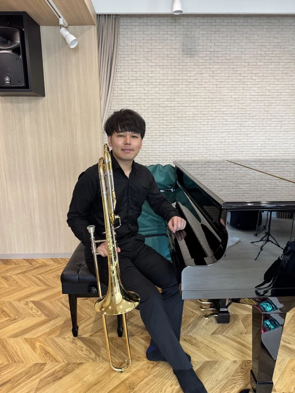
壽川 哲生
Akio Sugawa
広島県出身。小学校で音楽の先生に誘われてマーチングバンドへ入部。一番動きが派手だったトロンボーンを希望し、無事バストロに配属される。『高く跳ぶにはしゃがむ時間が必要』という言葉が好きで、しばしば理由なく自分を追い込む。大学時代は管体に穴の空いたスライドガサガサのバストロ（備品）を好んで使用していた。20歳で体力の限界を感じ突然引退。イヤイヤ期を経て3年前にマイ楽器を購入！以来テナー吹きとして復帰し、いまに至る。トロンボーン大好き^ - ^
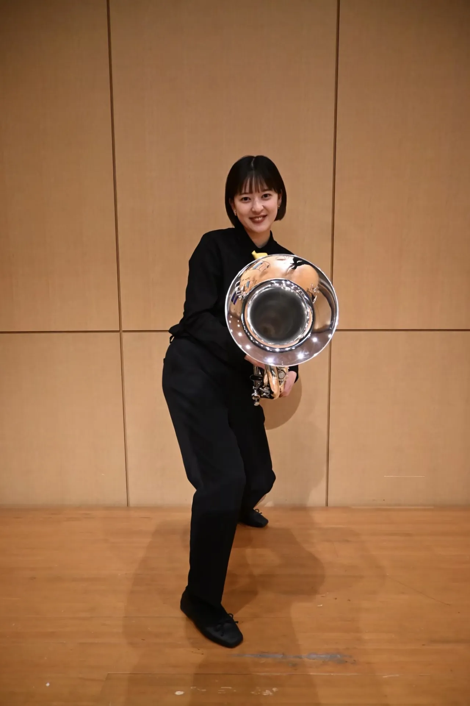
中原 法⼦
Noriko Nakahara
⼩学3年⽣の頃、転校先の⼩学校で暇潰しのため⾦管バンドに⼊る。1番吹きやすいからという安易な考えでユーフォニアムを希望。その後1年間だけトランペットを吹いていたが、下⼿すぎてユーフォニアムに戻されるという⿊歴史あり。⼩中⾼では座奏とマーチング共に頑張っていたが、歩きながら吹くにはあまりにも楽器が重すぎると10代半ばで早くも⾃分の体⼒に限界を感じ、⼤学はマーチングがない福岡⼯業⼤学に進学。最近念願のマイ楽器を購⼊。新しい楽器と仲良くなるために⽇々奮闘中。
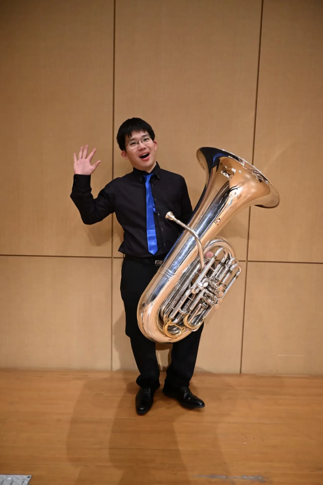
伊藤 有明
Ariake Itou
長崎県長崎市出身。10歳からテューバを始める。長崎県立長崎東中学校在学中、グレグソンの協奏曲でオーディションに合格し「第22回ながさき"若い芽のコンサート"」に出演。長崎県立長崎東高等学校、長崎大学を卒業後、現在は長崎県の小学校教諭として勤務する傍ら、二児の父、テューバ愛好家と三足のわらじを履いて日々奔走中。元気の源はびわソフト(大村湾SA)。最近は愛する子供たちにメガネを年一回ペースで破壊されるのに割とガチで悩み、コンタクトデビューを前向きに検討しているものの、長きにわたるメガネ着用に裏付けされたアイデンティティの崩壊を恐れている。
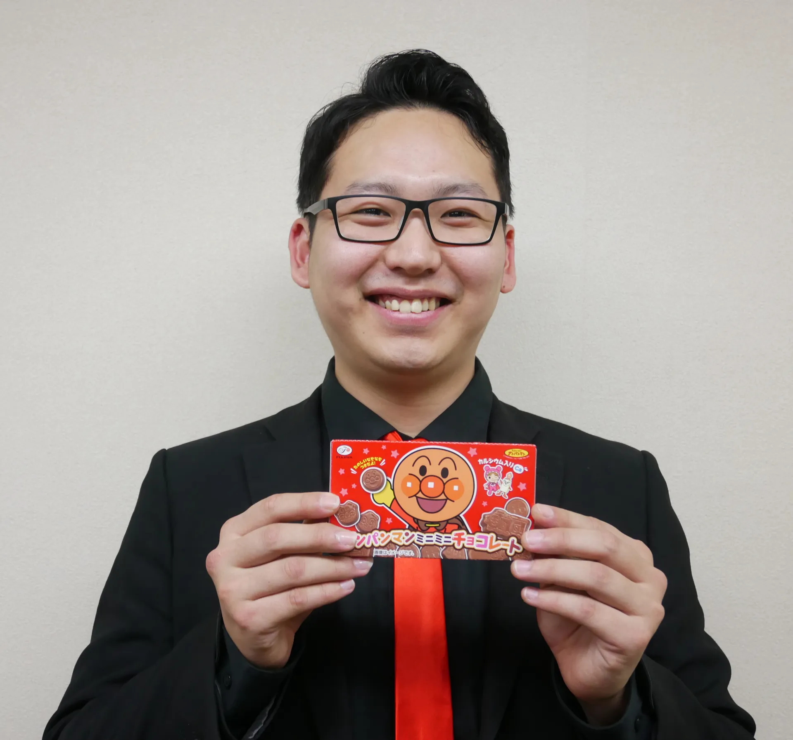
井上 遼
Ryo Inoue
卒業式でピアノを男が弾けばモテるだろうという願望から、⼩学6年⽣でピアノを独学で始める。中学校ではピアノが何となくうまくいった流れから、吹奏楽部にコントラバス担当で⼊部。（途中⼒沙汰により退部）⾼校では打楽器を担当する。（途中⾊恋沙汰により部⻑ながら部活停⽌）⼤学では学⽣指揮を務め、愛と気を友達に吹奏楽コンクールで全国⼤会出場を果たす。これまでに打楽器を⼭⼝⼤輔、お笑いを松本⼈志、博多華丸・⼤吉（いずれも観覧またはサインをもらっただけ）の各⽒に師事または崇拝。三児の⽗として育児奮闘中。趣味は豚⾻スープを体内に取り⼊れること。嫌いなものは⼤通りでもないのに全然⻘に変わらない信号機。
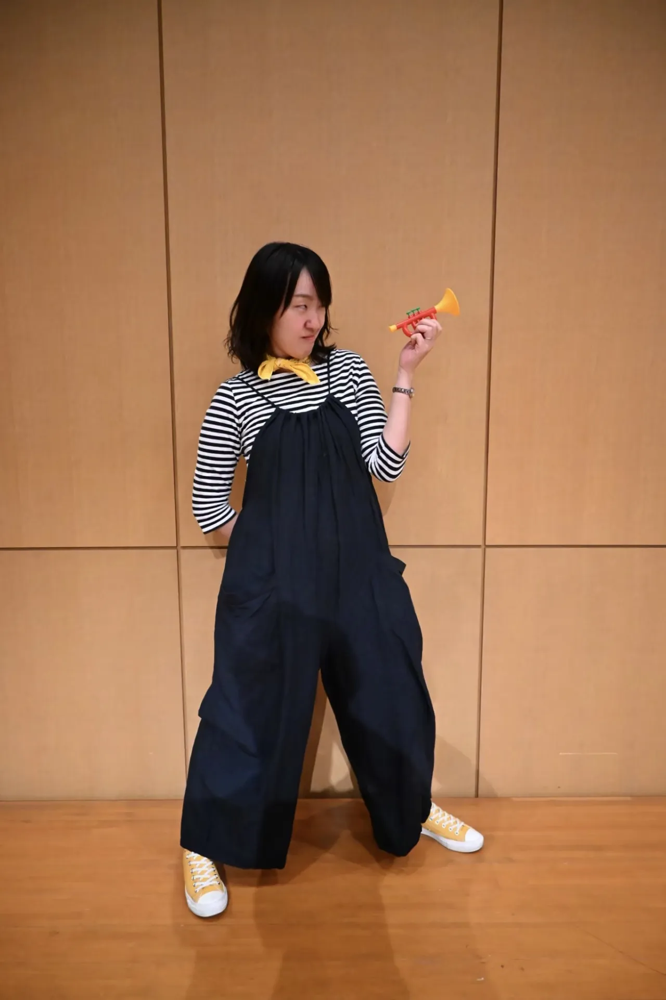
菅 ひかり
Hikari Suga
福岡市博多区出⾝。⼩学⽣のときに⾦管バンドに⼊部し、トランペットに出会う。そこから中学校・⾼校・⼤学とトランペットとひたむきに向き合い、⼤学では全国⼤会出場を果たす。博多美⼈といわれんばかりのその美貌で⼀役有名になる（夢を⾒た）。好きなもの：しなしなになったポテト。嫌いなもの：トマトと野菜の芯。今⽇は、そんな美⼈顔を出すことなく声だけで皆さんを落としてみせます。Here We Go!!